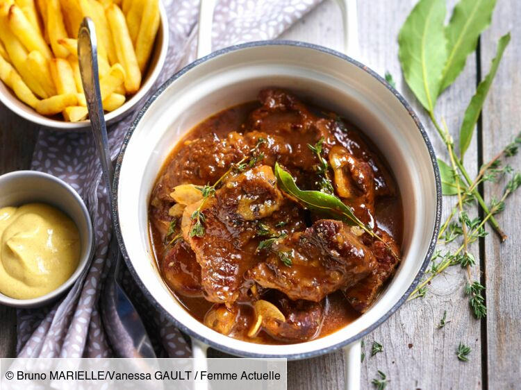

Recipes

Ingredients
- 3 spoons of mustard
- Guerande salt
- 30g of butter
- 5 slices of bread
- 250g of smoked bacon
- 400g of onions
- 1kg of lean beef
- 1 spoon of brown sugar
- 1 bouquet of garni
- 1L of brown beer
Preparation
-
Cut the meat into cubes measuring 2 to 3 centimeters on each side.
Roughly chop the onions and cut the bacon into large pieces.
-
Melt the butter and sweat the onions in it for 10 minutes to soften them
(low heat, covered).
-
Add the bacon, increasing the heat slightly, stirring regularly, trying
to keep it covered as much as possible.
-
Once the bacon is nicely pink, remove everything (except the juice) and
reserve it in a dish.
-
Turn the heat to high and put the meat in the casserole. Stir regularly
(do not cover), the meat should color on all sides, it will eventually
release a lot of juice. Remove the casserole from the heat, put the meat
in a dish, keeping the juice in the casserole.
-
Dilute the brown sugar in the meat juice and put on high heat. to reduce
it by half.
-
Once reduced, put the mini on fire and add the bacon-onion mixture by
mixing it with the 'syrup', add the meat and mix again, add the bouquet
garni and cover with beer between (80 cl and 1 liter), salt very
lightly.
-
Gently cover the entire surface with the 'mustard' gingerbread. Leave to
simmer covered for 3 hours without stirring, as long as the gingerbread
has not melted (remove the bouquet after 1 hour or 2 maximum).
- While 'simmering', adjust the seasoning if necessary.
-
If after three hours, the juice is still too liquid, let it simmer
again, leaving the lid partly open; the sauce should be slightly sticky
on the surface but very liquid underneath and should not burn at the
bottom.